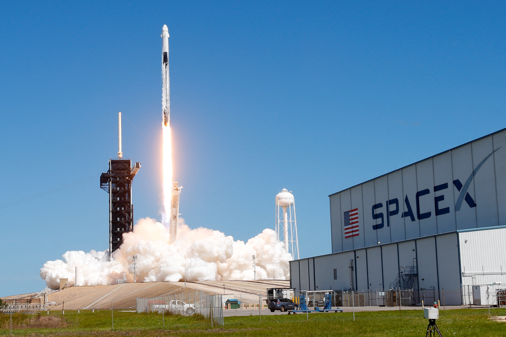

SpaceX prévoit le premier décollage de la fusée Falcon Heavy pour le 6 février
Le vol inaugural du lanceur lourd Falcon Heavy,
prévu initialement pour l'automne,
se déroulera le mardi 6 février, annonce SpaceX. Fin janvier,
l'entreprise américaine a effectué avec succès un test de mise à feu statique.